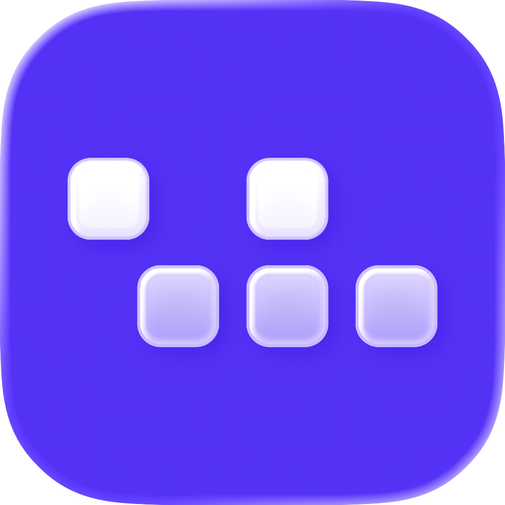

VLinked
by

WORCEPlatform manajemen perangkat IT (UEM/MDM) yang digunakan perusahaan untuk mengelola, mengontrol, dan mengamankan berbagai device seperti laptop, smartphone, dan tablet dari satu dashboard terpusat.
Fitur lengkap untuk kebutuhan perangkat perusahaan anda.
Laporan aktivitas secara real-time
Lacak lokasi perangkat dengan akurat
Melindungi data & perangkat
Cek status perangkat secara instan
VLinked desktop tersedia untuk sistem operasi pilihan anda. Kunjungi situs untuk mengunduh.
macOS
Windows
Get Started Now
Masuk ke akun Anda untuk melanjutkan.
Masuk dengan
⌕
Enterprise Device Intelligence Platform
Live Workforce Telemetry
Health Score—Device initializing
CPU Analytics
Realtime processing load, peak, and rolling average.
Now —Peak —Avg —
RAM Analytics
Memory pressure and allocation.
—Used / free
Memory pressure pending
Top RAM Consumers
Top 5 apps by memory usage.
Usage Breakdown
Focus distribution by application.
Intelligence Signals
Local analytics engine output.
Active vs idle ratio—
Switch frequency—
Memory spikes0
Anomaly stateStable
Current Activity
Application focus, active window, duration, and productivity context.
Classifying
—
Currently focused—
—
Executable pendingActive duration00:00
Network Analytics
Upload, download, and quality signal.
Up —Down —
Activity Timeline
Recent app sessions with duration and switch history.
Storage Analytics
Disk usage and available capacity.
Used —Free —Status Healthy
System Specifications
Hardware specifications and network information.
CPU Type—
RAM Type—
GPU Type—
SSD Type—
IP Lokal—
Mac Address—
GPU Analytics
Graphics processor load and dynamic usage.
—GPU load
GPU status healthy